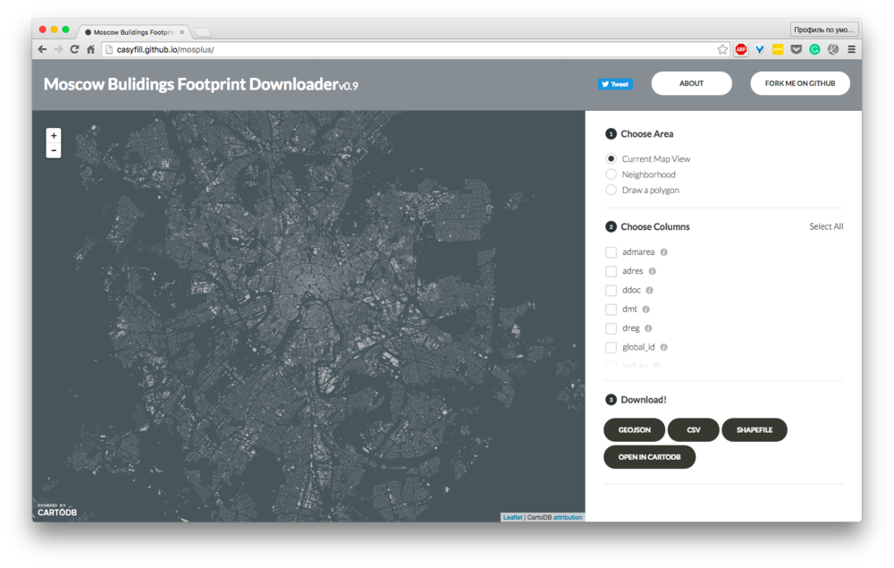

MosPlus is a tiny static tool, that allows spatial query and extraction of Moscow building fingerprints, built on top of open data from Moscow address reestr, open source of the original PLUTOPlus tool, created by Chris Whong, and awesome API from CartoDB (data is actualy hosted on CARTODB servers).
Using the tool, you can select any fraction of the supported attributes, and query the data spatially - either by zooming your screen, drawing a poligon, or using administrative borders. Data can be downloaded as a geojson, shapefiles, csv, or copied directly to your cartodb account.
Unfortunately, original dataset is not perfect - some information is outdated, and some is missing. In addition, a significant amount of geometries was invalid, and yet to be cleaned and integrated to database.
I hope this tool would be useful for me and other analytics.